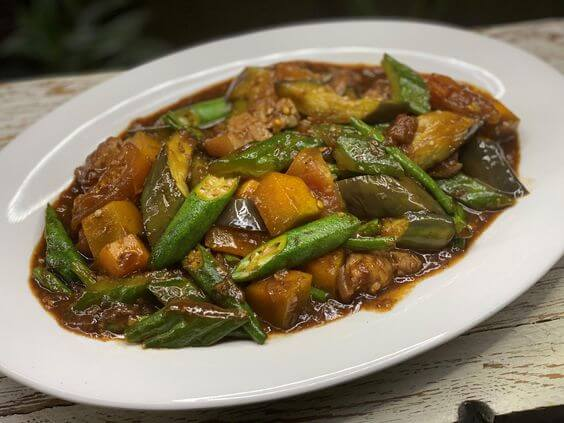

Ang Pinakbet ay isa sa mga makulay at malasa na mga lutuin ng Pilipinas na kilala sa kanyang malasang lasa at
nakakabusog na pagkain. Ito ay isang pagkaing nagpapahayag ng kahalagahan ng mga gulay sa ating kultura at
pamumuhay.
Ang salitang "Pinakbet" ay nagmula sa salitang Ilokano na "pinakebbet," na nangangahulugang "hinaluan" o
"pinagsama-sama." Ito ay isang lutuing kadalasang ginagawa sa pamamagitan ng pagluluto ng iba't ibang uri ng
gulay tulad ng ampalaya, sitaw, talong, kalabasa, at okra, kasama ang karne ng baboy o baka. Karaniwang kasama
rin sa Pinakbet ang bagoong, bawang, sibuyas, at iba pang mga pampalasa. Ang pagluluto ng Pinakbet ay
nagaganap sa kawali o kaldero hanggang sa maluto ang mga sangkap at mabuo ang lasa.
Ang Pinakbet ay hindi lamang isang simpleng pagkaing gulay; ito ay isang pagsasama-sama ng lasa at
pagpapahalaga sa mga lokal na sangkap ng Pilipinas. Ito ay naglalarawan ng galing at pagkamalikhain ng mga
Pilipino sa paggamit ng mga sariwang gulay na nagpapahayag ng yaman ng ating kalikasan. Ang Pinakbet ay isang
patunay ng kakayahan natin na magsagawa ng masasarap at malusog na mga pagkain mula sa ating mga likas na
yaman.
Ang paghahanda ng Pinakbet ay hindi lamang tungkol sa lasa nito, kundi pati na rin sa pagsasama-sama at
pagpapahalaga sa mga tradisyon ng mga Pilipino. Ito ay madalas na inihahanda sa mga pamilya bilang
pangkaraniwang ulam o bahagi ng pagsasalu-salo. Sa bawat pagluluto at paghahain ng Pinakbet, nabubuo ang mga
masayang alaala at samahan na nagtataguyod ng pagkakaisa at pagmamahalan ng mga Pilipino.
Ang Pinakbet ay naglalaman ng malalasang lokal na mga sangkap na nagpapahayag ng yaman ng ating kalikasan.
Mula sa sariwang mga gulay na nagpapahayag ng likas na yaman ng ating bansa, hanggang sa mga pampalasa tulad
ng bagoong, sibuyas, at bawang na nagbibigay ng lasa at katangi-tanging aroma, ito ay nagpapahayag ng
pagpapahalaga ng mga Pilipino sa kanilang sariling mga produkto.
Sa huli, ang Pinakbet ay hindi lamang isang pagkaing nagpapakain sa katawan, ito ay isang simbolo ng
pagkakaisa, kalinangan, at pagpapahalaga ng mga Pilipino sa mga gulay at kultura ng pagkaing gulay. Ito ay
nagpapaalala sa atin na ang pagkain ay hindi lamang tungkol sa sustansya, kundi pati na rin sa pagpapahalaga
at pagmamahal sa ating sariling kultura at mga likas na yaman.
Pinakbet: Pagpapakita ng Sariwang Lasang-Pinoy at Kultura ng Pagkaing Gulay
